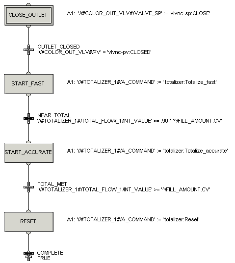

Creating the remaining logic for the FILL phase
Complete the logic for the FILL phase using information from the table below.
| Step/Transition Name | Action or Condition Text |
|---|---|
| Transition: NEAR_TOTAL | '//#TOTALIZER_1#/TOTAL_FLOW_1/INT_VALUE'>= 0.90 * '^/FILL_AMOUNT.CV' |
| Step: START_ACCURATE | '//#TOTALIZER_1#/A_COMMAND' := 'totalizer:Totalize_accurate' |
| Transition: TOTAL_MET | '//#TOTALIZER_1#/TOTAL_FLOW_1/INT_VALUE' >= '^/FILL_AMOUNT.CV' |
| Step: RESET | '//#TOTALIZER_1#/A_COMMAND' := 'totalizer:Reset' |
| Termination: COMPLETE | TRUE |
The completed SFC should look like the following, except that the step actions will not show on the diagram. (We added the step actions to the diagram using the Comment tool on the graphics toolbar.)
